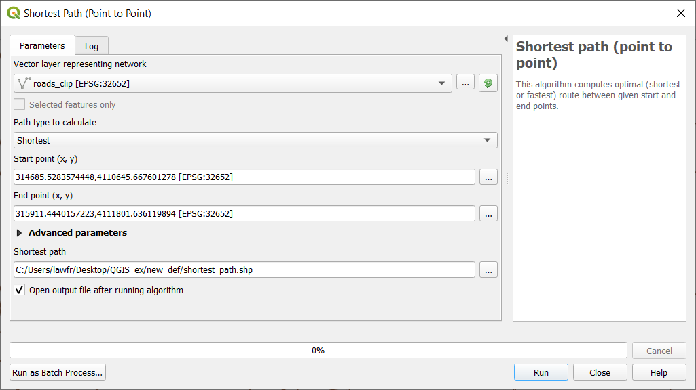
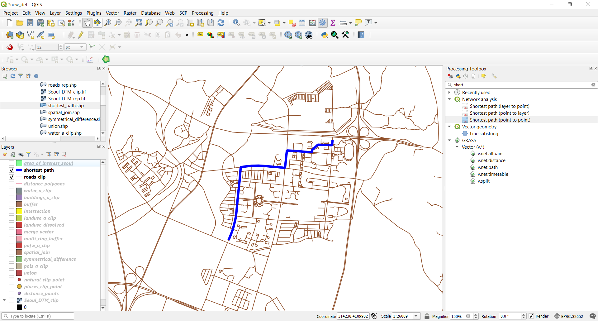
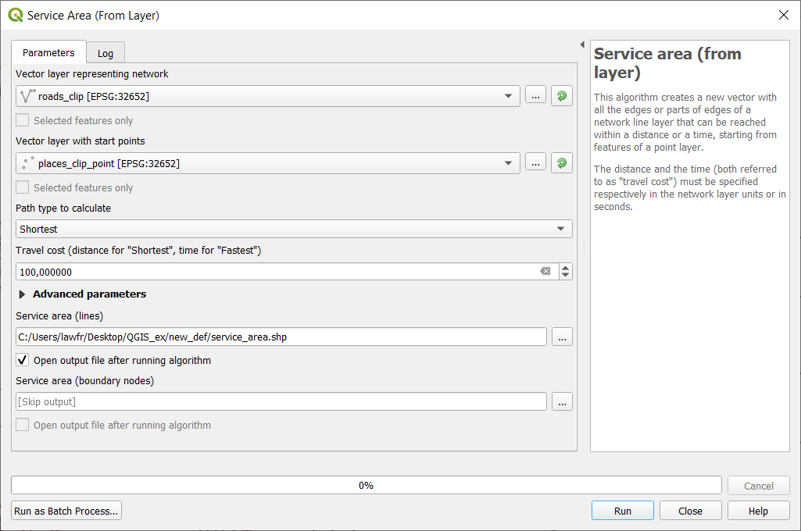
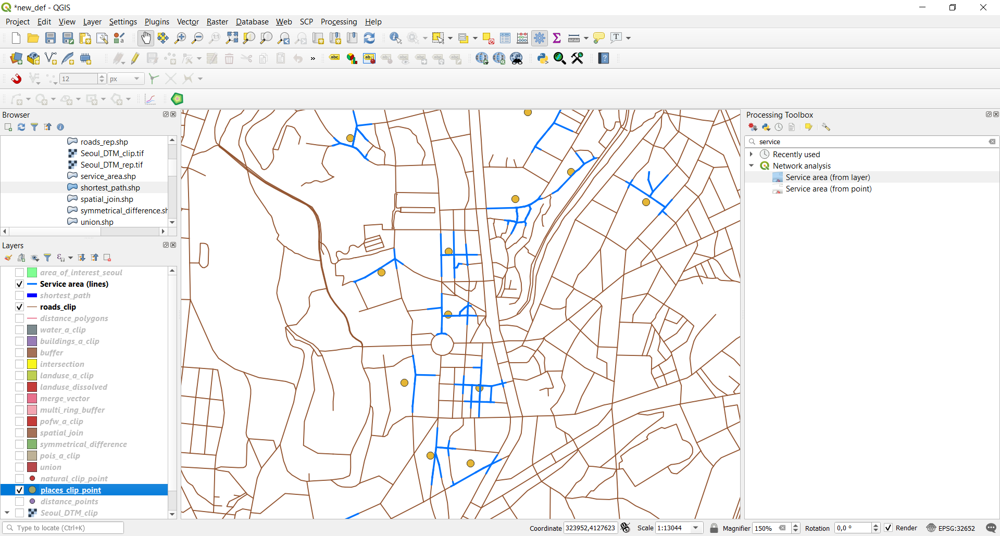

3.5. Network analysis¶
3.5.1. Shortest path¶
In order to find the shortest or fastest path in QGIS, we can use the Shortest path function. Having a layer representing a network, we can calculate the shortest path between two chosen points on the map (point to point), from a point layer to a chosen end point (layer to point) or from a chosen start point to a point layer (point to layer).
We illustrate here only the point to point option for the sake of computation, but the others are easily deduced from the following example. The function is available at Processing Toolbox->Network analysis->Shortest path (point to point), and the input parameters are:
- Vector network layer: the
roads_cliplayer- Path type to calculate: “shortest” (you can also calculate the fastest path given a network layer with maximum velocity information)
- Start point: click on the icon on the right, then choose a starting point from the map
- End point: click on the icon on the right, then choose an ending point from the map
- Shortest path: the path and the name of the output vector layer. Note that if left empty a temporary layer will be created
Fig. 3.5.1.1 Shortest path (point to point) function window
As you can see this algorithm creates a new line layer that represents the shortest path in the provided network to go from the starting point to the end point:

{kind=link}
{kind=link}
3.5.2. Generate service area¶
In QGIS, we can also generate a service area using the Service Area function. To perform such, you can search for Service area in the Processing toolbox searchbar and select Service area (from point). This function allows creating a vector with all the parts of a network layer that can be reached within a distance or a time, starting from a point chosen on the map. The same can be done starting from a point layer using Service area (from layer). We will use the last one to calculate the service area for all the places points with a maximum travel distance of 100 meters. The input parameters are:
- Vector network layer: the
roads_clipnetwork- Vector layer with start points: the
places_clip_pointlayer- Path type to calculate: “shortest” (you can also calculate the fastest path given a network layer with maximum velocity information)
- Travel cost: 100 (so that the maximum travel distance is 100m)
- Service area: the path and the name of the output vector layer. Note that if left empty a temporary layer will be created
Fig. 3.5.2.1 Generate service area function window
The result will highlight the service area for each point of the places layer:

{kind=link}
{kind=link}